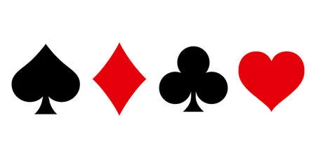

|
 Moim zainteresowaniem jest Brydż. Brydż jest rodzajem gry karcianej. W tą grę grają dokładnie cztery osoby, nie więcej, nie mniej. Rozgrywka toczy się w parach. Uczestnicy grający w parach siedzą naprzeciwka siebie. W Brydża można grać wieloma systemami. Przykładowymi są: SAYC (Standard American Yellow Card), WJ (Wspólny Język) i Strefa. każdy system ma oddzielne prawa i załorzenia, przykładowo: w SAYC'u licytujemy kontrakt od 12 punktów, a w WJ od 7 punktów. Gra rozpoczyna się od licytacji. Uczestnicy gry licytują kontrakty (bez rozmów) za pomocą bidding boxów. po ostatecznym zatwierdzeniu kontraktu przechodzimi do rozgrywki. Pierwsza osoba po lewej stronie rozgrywającego wistuje, czyli wystawia pierwszą kartę. Dalej gra toczy się na zasadzie przebijania kart (dziewiątka bije ósemkę). Gra kończy się, gdy rozegrane zostanie 13 lew. Jeżeli rozgrywający uzyska zalicytowaną ilość lew lub więcej, wygrywa. Jeżeli nie, to obrońcy (przeciwna drużyna) wygrywają. Moje ulubione strony WWW |